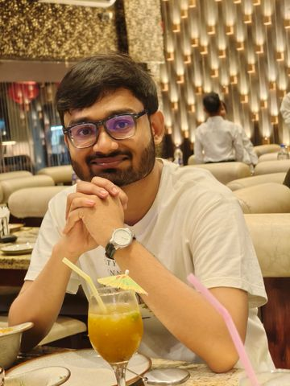
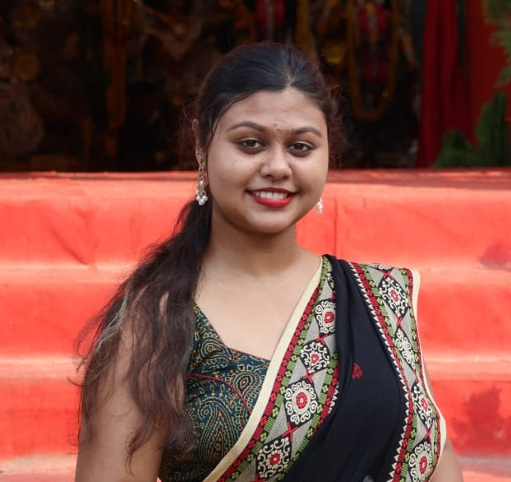
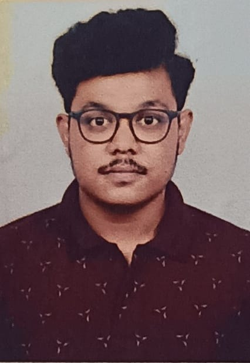
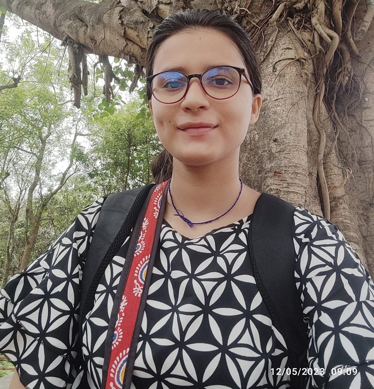
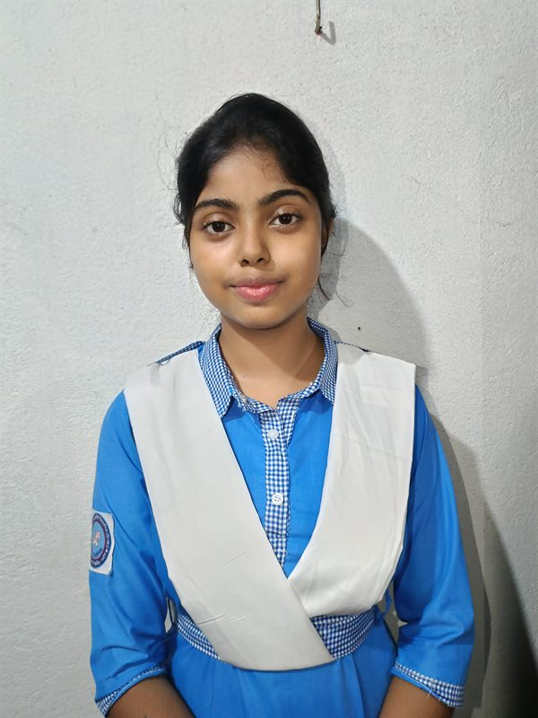
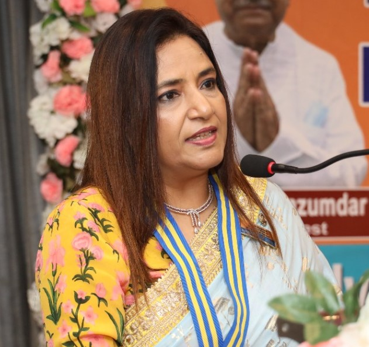
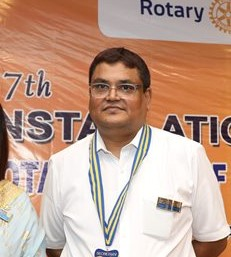

PRESIDENT (JULY 2024 – DECEMBER 2024)
LEADERSHIP & GOVERNANCE
The executive leadership team steering the club's administration, operations, and service initiatives during Rotary Year 2024–25.
PRESIDENT (JULY 2024 – DECEMBER 2024)

PRESIDENT (JANUARY 2025 – JUNE 2025)

IPP & CHIEF CLUB ADVISOR

VICE-PRESIDENT & SERGEANT-AT-ARMS

SECRETARY - ADMINISTRATION & TREASURER

SECRETARY EVENTS & PUBLIC RELATIONS OFFICER

DIRECTOR – CLUB SERVICE

DIRECTOR – INTERNATIONAL SERVICE
DIRECTOR – PROFESSIONAL DEVELOPMENT

DIRECTOR – YOUTH SERVICE

DIRECTOR – FINANCE

DIRECTOR – SPECIAL AREAS
GENERAL BODY
The passionate youth members whose active participation and dedication powered our initiatives throughout Rotary Year 2024–25.

Member

Member

Member
Member
COMMUNITY ENGAGEMENT
Youth leaders, campus contributors, and community volunteers who supported our projects on the ground during Rotary Year 2024–25.

Volunteer

Volunteer

Volunteer

Volunteer

Volunteer
ROTARY CLUB OF DURGAPUR CENTRAL
Our mentors from the Rotary Club of Durgapur Central whose unwavering support, wisdom, and encouragement guided our club in Rotary Year 2024–25.

President

Secretary
SERVICE IN ACTION
The initiatives, community drives, professional workshops, and fellowship events executed during Rotary Year 2024–25.
Interactive visual breakdown of the 36 initiatives executed during Rotary Year 2024–25 across Rotary's four foundational avenues. Hover or tap any slice or card to explore avenue shares.
Mental health awareness, ISD & Saksham orientations, Sign Language workshop & RSA MDIO conclaves.
Boier Desh expansion, Exuberance charity gala, Autism YAAR picnic, stationery & women hygiene drives.
Anubandha Multi-District Youth Exchange, RI President interview, Project PinkBird & Mandela Month drives.
Parichay 2.0, Utkarsh 35th District Installation, Parent Rotary installation & Aikyam fellowship meetup.
We attended an enriching district-level interaction session that marked our first opportunity to meet and interact with our new DRR, Rtr. Rtn. Aloka Dey, along with the ZR and ZS. The session brought together club presidents and secretaries, providing a platform to introduce themselves and share their visions, missions, and plans for the year ahead. Each representative discussed their proposed initiatives across various avenues, encouraging collaboration and the exchange of ideas. The programme concluded with best wishes and words of encouragement from the DRR, ZR, and ZS, motivating all club leaders to work towards a successful and impactful Rotaract year.
On 30th June 2024, we welcomed the beginning of Rotaract Year 2024–25 by visiting Universal Smile Orphanage at 10:00 AM, while also celebrating the Foundation Day of our collaboration partner, Helping Hut NGO. During the visit, we interacted with the children, participated in a cake-cutting ceremony, and organised fun-filled activities to create joyful memories. We also took the opportunity to understand their potential educational and social needs. Furthermore, we initiated discussions with the orphanage management regarding the future launch of our signature educational initiative, “Boier Desh,” at their premises, aiming to provide children with continued learning opportunities and support.
We were delighted to inaugurate the second branch of Boier Desh at Muktodhara, Naihati New Life Society, marking an important milestone in our commitment to promoting education among underprivileged children. We celebrated the occasion by cutting a special “Boier Desh” cake with the children, sharing moments of joy and togetherness. Following the celebration, we held discussions with the Muktodhara committee to plan the upcoming educational sessions, including arrangements for conducting regular Boier Desh classes. Through this expansion, we aimed to extend our educational support to more children and create greater opportunities for learning, growth, and a brighter future.
On 6th July 2024, we attended the Installation Ceremony of the Rotary Club of Durgapur Central at Peerless Hotel, Durgapur. Our club was represented by Rtr. Debarpito Sarkar, Rtr. Sairath Das, and Rtr. Ankita Roy. The event marked the beginning of a new Rotary year and provided us with an opportunity to strengthen our relationship with our parent Rotary club. Through our participation, we celebrated the spirit of leadership, fellowship, and service while reaffirming the importance of collaboration between Rotary and Rotaract in creating meaningful and lasting community impact.
We organised a Special Quiz on World Population Day to raise awareness about global population challenges and the importance of sustainable development. The initiative invited participants to take part in an engaging and informative quiz centred on the significance of World Population Day, observed annually on 11th July. Through this activity, we aimed to encourage learning, spread awareness about population-related issues, and highlight the need for responsible and sustainable development. The quiz provided an opportunity for participants to test their knowledge while reflecting on the global challenges associated with population growth and the importance of building a sustainable future for all.
We attended “Utkarsh – 35th District Installation Ceremony,” where our new District Rotaract Representative (DRR), Rtn. Rtr. Aloka Dey, was formally collared and received heartfelt wishes for a successful tenure. During the ceremony, she introduced her District Council to the clubs, outlining the leadership team for the year ahead. The Chief Guest of Honour, the District Governor, addressed the gathering and inspired young Rotaractors to create meaningful change through service and fellowship. The event marked an important beginning for the new district leadership and motivated us to strengthen our commitment to community service, collaboration, and purposeful leadership.
We attended “Mind Matters: Breaking Barriers,” a mental health awareness webinar organised by the Rotaract Club of Galgotias Educational Institutions in collaboration with the Rotaract Club of Rajdhani. Guided by psychologist Tanvi Jain, the session focused on addressing the stigma surrounding mental health and promoting open conversations about emotional well-being. Through meaningful discussions and expert insights, we gained a better understanding of mental wellness and the importance of recognising and managing mental health challenges. The initiative encouraged young people to approach mental health with empathy, understanding, and awareness while fostering a supportive environment where individuals feel comfortable seeking help.
On 29th July 2024, we attended an International Service Director (ISD) Orientation Programme organised by District 3240 at 8:00 PM. The session aimed to familiarise all ISDs with their roles, responsibilities, and opportunities to explore international service initiatives within Rotaract. We were privileged to learn from the valuable insights and experiences shared by DRRE (DSA) Rtr. Kumar Shivam Das and DRCC PDRR Rtn. Sandip Das. The programme was also graced by our DRR, Rtn. Rtr. Aloka Dey. Through this orientation, we gained a clearer understanding of international service and were inspired to explore new horizons through meaningful collaborations.
We were thrilled to attend an exclusive interview session organised by Rotaract District Organization 3053 in collaboration with the South East Asia Rotaract Information Centre (SEARIC) MDIO, featuring Rotary International President Rtn. Stephanie A. Urchick. Hosted by Rtr. Yashica Bharadwaj, the session offered us a valuable opportunity to hear directly from Rotary’s second woman president and gain insights into her experiences, leadership journey, and vision for Rotary. Through this enriching interaction, we strengthened our understanding of Rotary’s values and the importance of purposeful leadership, inspiring us to continue serving our communities with greater dedication and commitment.
On 1st August 2024, we organised a Multi-District Letterhead Exchange and Club Service Event in collaboration with RAC Phoenix Burdwan, RAC North Tripura, and RAC Malda Central of RI District 3240, along with RAC Ashoka Artisans of RI District 3012. Held at Chai Bar, Oxford Bookstore, Park Street, Kolkata, the event brought Rotaractors together for fellowship and inter-district networking over special Darjeeling tea and coffee. Following the letterhead exchange, we took Rtr. Paras Aneja of RAC Ashoka Artisans on a brief Kolkata tour. We also discussed future joint projects across Delhi, Kolkata, and Durgapur.
On 10th August 2024, we conducted a small yet meaningful initiative under Mandela Month, led by Rtr. Debarpito Sarkar of RAC Durgapur Central Presidency. At his residence in Dum Dum Park, Kolkata, we gifted a toy to a two-year-old child, bringing joy and happiness to the young recipient. This initiative reflected the spirit of Mandela Month, which encourages individuals to dedicate 67 minutes of their lives to serving the community in honour of Nelson Mandela’s legacy. Through this simple act of kindness, we reaffirmed our commitment to spreading happiness, compassion, and the values of service to humanity.
On 11th August 2024, we organised a food donation drive under our signature project “Project Zero” and in observance of Mandela Month, led by Rtr. Tanveen Kaur Soni. We distributed 15 food packets, each containing three rotis, 150 grams of mixed vegetables, and one sandesh, to people living on the streets around Prince Anwar Shah Road, Kolkata. Along with food, we also distributed second-hand clothes according to the individual needs of the recipients. Through this initiative, we aimed to address basic necessities, spread kindness, and uphold the values of compassion, dignity, and service to humanity.
On 15th August 2024, we participated in “Proudly Posing – Selfie with Tiranga 2.0,” organised by the Rotaract Club of Asansol to celebrate India’s Independence Day. As part of this initiative, participating Rotaractors proudly waved the Indian National Flag, captured selfies with the Tiranga, and shared them on WhatsApp on 15th August. Through this simple yet meaningful activity, we celebrated patriotism, national pride, and the spirit of unity in diversity, reaffirming our respect for the nation and its rich cultural heritage.
On 16th August 2024, we jointly organised “Project Pink Bird” with the Rotaract Club of Ashoka Artisans, RID 3012. Through this initiative, we distributed sanitary napkins to women to promote menstrual hygiene and empower them with essential resources. We also aimed to break the social stigma surrounding menstruation by actively involving male members in the distribution and awareness efforts. We emphasised that menstruation is a natural biological process, unrelated to gender, and that open conversations involving all members of society are essential to eliminating taboos and fostering awareness, empathy, and equality.
On 17th August 2024, we organised a Daily Essentials Kit Distribution initiative in the Park Circus area of Kolkata, led by Rtr. Pratisruti Dutta and Rtr. Monimoy Ghosh. We distributed 20 essential kits among street dwellers of different age groups, each containing toothpaste, a toothbrush, soap, shampoo sachets, a comb, biscuits, and puffed rice, at a cost of ₹60.35 per kit. The initiative aimed to support basic hygiene and nutritional needs while spreading kindness and compassion. We also invited three prospective members to experience our community service efforts and understand the spirit of Rotaract firsthand.
On 17th August 2024, we organised “Aikyam,” a Club Service project and member meetup at Chowman Restaurant, Salt Lake, Kolkata, led by our Director of Club Service, Rtr. Monimoy Ghosh. The event introduced new members to our club leadership, the Rotaract movement, and our vision and objectives. We celebrated our Charter President IPP Rtr. Sairath Das’s successful Rotaract year with a cake-cutting ceremony, followed by his valuable insights on successful Rotaract leadership. We also welcomed prospective members, two of whom were inducted into our club that day. Aikyam strengthened fellowship, encouraged engagement, and inspired our members to serve with purpose.
On 25th August 2024, our Vice-President and Director of International Service, Rtr. Debarpan Mazumder, attended the Rotary Youth Leadership Awards (RYLA), hosted by the Rotaract Club of Bengaluru HSR in collaboration with the Rotary Club of Bengaluru HSR. The event provided an excellent opportunity to develop essential leadership skills, connect with like-minded individuals, and explore ways to create a positive community impact. Participants received exclusive RYLA kits, along with lunch and high tea. The programme concluded with engaging networking activities, fostering meaningful connections, collaboration, and personal growth among aspiring young leaders.
On 25th August 2024, our President, Rtr. Ankita Roy, participated as a speaker in “Safety – A Joke,” a webinar organised by the Rotaract Club of Anand Institute of Higher Technology (RID 3233) in collaboration with the Rotaract Club of Ashoka Artisans (RID 3012). Addressing women’s safety in the aftermath of the R.G. Kar incident, she highlighted the longstanding challenges faced by women and emphasised the importance of awareness regarding legal rights and protections. The international webinar brought together Rotaractors from India, Nigeria, Sri Lanka, Nepal, Uganda, Pakistan, and Saudi Arabia to discuss women’s safety, its challenges, and possible solutions.
On 25th August 2024, we participated in “Saksham,” a Professional Development Orientation Session organised by Rotaract District 3240 for club leaders. The insightful session was led by PDRR IPDRCC Rtn. Dr. Mantu Paul and DRR Rtn. Rtr. Aloka Dey. We gained valuable knowledge and practical insights into planning and conducting effective professional development initiatives for our members. The session equipped us with ideas and guidance to organise impactful learning opportunities in the upcoming months, strengthening our commitment to leadership development, skill enhancement, and the overall growth of our club and its members.
On 22nd September 2024, we organised “Vinayam,” a District Project led by our Secretary-Events, Rtr. Pratisruti Dutta, at Ganga Brick Factory, Kankinara, Naihati. We began by distributing 80 food packets among children and their mothers, followed by an interactive awareness session with 12 women workers on menstrual hygiene, health, personal safety, consent, and the importance of education and financial independence. We also identified challenges concerning unemployment, sanitation, and educational opportunities. We distributed sanitary pads to all 12 women and resolved to address their needs through future initiatives with the support of Rotary.
On 28th September 2024, we organised “Re-Think,” a District Project at Muktodhara, Naihati New Life Society, Naihati. The initiative featured a drawing competition with 29 children from Classes I to VI, based on the theme “Draw As You Like.” We provided each participant with drawing materials and one hour to showcase their creativity. Seven outstanding entries received recognition, including first, second, and third-place prizes and a special recognition award. All participants received certificates, chocolates, and pens, while winners received special gifts. Through Re-Think, we encouraged creativity, self-expression, and confidence among young minds.
On 28th September, we organised “Brainiac,” a District Project quiz competition at Muktodhara, Naihati. Our Quiz Master, Rtr. Sarthak Roy, conducted an engaging quiz designed for children from Classes I to VI. The competition featured 20 simple, age-appropriate questions, encouraging active participation, curiosity, and learning among the children. To appreciate their efforts and motivate them, we gifted a pen to every participant who answered a question correctly. Through Brainiac, we aimed to make learning enjoyable, boost the children’s confidence, and nurture their knowledge through a fun-filled educational experience.
On 2nd October 2024, we gathered online at 4 AM to celebrate Mahalaya, listening to the timeless Mahishasura Mardini recitation by Birendra Krishna Bhadra. Together, we immersed ourselves in the enchanting verses invoking Maa Durga to descend to Earth and mark the beginning of the festive season. As dawn broke, we embraced the spirit of devotion, unity, and cultural heritage, cherishing this cherished Bengali tradition despite being physically apart. Through this virtual gathering, we welcomed the arrival of Maa Durga and prepared our hearts for Durga Puja with reverence, joy, and renewed hope.
On 2nd October 2024, we participated in “Mind Matters,” an online mental health awareness session organised by the Rotary Club of Nagpur for Rotaractors of District 3249. The session was conducted by Rtn. Rita Aggarwal, a renowned consulting psychologist from Nagpur, Maharashtra. We learned about the Peer Leadership Development Program, its objectives, benefits, and our role in supporting peers. The session also covered the biopsychosocial model of depression, its symptoms, and ways to help those experiencing emotional difficulties. Through an interactive “Peer Leader to Person” conversation, we explored empathetic listening and the importance of mental well-being.
On 5th October 2024, we participated in “Rotaract Club Excellence Awards & Rotary Club Central,” organised by the Rotaract South Asia Multi-District Information Organization (RSA MDIO). The session was conducted by PDRR Rtn. Rtr. Sailesh Proddaturu, Faculty of the Rotary Leadership Institute and Director of Events at RSA MDIO. We gained valuable insights into club administration and management through Rotary Club Central, including its latest updates, features, and tools. The session also explained the Rotaract Club Excellence Awards, their significance, and the application process, helping us strengthen our club management and reporting practices.
On 6th October 2024, we participated in “The Art of Silent Speech,” organised by the Rotaract Club of Bengaluru HSR in collaboration with the Rotaract Club of Mysore. The session introduced us to the fundamentals of Indian Sign Language (ISL), including standard alphabets, basic gestures, and commonly used signs. We also learned how to greet others and introduce ourselves using ISL. Through this initiative, we gained a better understanding of inclusive communication and the importance of bridging communication barriers, fostering empathy, and creating a more accessible and inclusive society for everyone.
On 16th October 2024, we participated in “Forensic Blood Analysis,” organised by the Rotaract Club of Delhi Pegasus, RID 3012, in collaboration with Blood Connect. The session featured Dr. Urvashi Sharma, MBBS, DNB Pathology, who introduced us to forensic science and the techniques used to analyse blood evidence during crime scene investigations. We also gained insights into identifying injury marks and understanding the medical aspects of determining causes of death. The informative session enhanced our knowledge of forensic pathology and highlighted the vital role of scientific analysis in criminal investigations.
In October, we completed a Disability Sensitization Programme in collaboration with DAND, gaining valuable insights into the lives, experiences, and challenges of persons with disabilities. Through this initiative, we developed a deeper understanding of accessibility, inclusion, and the importance of empathy and equal opportunities. The programme inspired us to recognise the remarkable resilience and determination of persons with disabilities, who overcome numerous barriers to achieve extraordinary milestones. This learning experience encouraged us to become more sensitive, inclusive, and compassionate Rotaractors, committed to building a society where everyone is respected, empowered, and given equal opportunities to thrive.
On 14th November 2024, we attended LEADERS Edition 6, hosted by RSAMDIO on the theme “Beyond Boundaries.” The session featured keynote speaker John Hannes, CDS Global Initiatives Supervisor at Rotary International, who shared valuable insights into Rotaract’s global journey and its role in connecting communities worldwide. He also explained Global Grants and how Rotaractors can access funding to support impactful community projects. The interactive Q&A session provided an opportunity to exchange experiences, discuss ideas, and explore new possibilities. The event enriched our understanding of international collaboration, leadership, and global service opportunities.
In November 2024, we organised EXUBERANCE 2024, our first-ever fundraising cultural programme, in association with Helping Hut NGO Kolkata, at Children’s Little Theatre, Gariahat, on 24th November. With around 150 attendees, the evening featured captivating dance performances by Bhatpara Udichi Nritya Kala Kendra and Team Samridhi, soulful Bengali folk music by Mitra Dal, and an energetic performance by Distorted Chromosomes. The event was inaugurated by renowned writer-director Mr. Jayabrata Das and Mr. Debjit Podder, Co-founder and CEO of Poddar Financial Solutions. Through this vibrant celebration of youth and talent, we successfully raised funds to support a children’s hospital and a cancer hospital.
In December 2024, we, the Rotaract Club of Durgapur Central Presidency, sponsored by the Rotary Club of Durgapur Central, hosted our first Rotaract Inter-District Youth Exchange (RIDE)/Multi-District Youth Exchange (MDYE), ANUBANDHA, under Rotaract District 3240. Held in Kolkata from 6th to 9th December, we welcomed delegates from Rotaract Districts 3141 and 3040. Through heritage visits, cultural exploration, local cuisine, fellowship, and letterhead exchanges, we showcased Kolkata’s rich traditions and vibrant spirit. With the valuable guidance of Rtr. Pintu Sharma and Rtr. Stuti Sharma, we successfully conducted this memorable exchange, celebrating friendship, cultural diversity, and inter-district unity.
In January 2025, we collaborated with the Autism Society of West Bengal to organise an indoor picnic for autistic individuals. Our initiative aimed to create a joyful, inclusive, and family-like picnic experience where everyone could participate comfortably. Three of our Rotaractors assisted the teachers in engaging participants through fun activities, including musical chairs, singing, dancing, and Bhelpuri making. Snacks, tea, coffee, and freshly prepared Bhelpuri added to the festive atmosphere. Through this heartwarming initiative, we shared smiles, strengthened bonds, and made 12 new friends, celebrating inclusion, companionship, and the happiness of togetherness.
This month, we had the privilege of hosting our official DRR Visit with District 3240 DRR Rtn. Rtr. Aloka Dey, accompanied by ZRR Rtr. Didhiti Singha and ZS Rtr. Chirag Patel. We conducted the visit jointly with the Rotaract Club of Durgapur Central. Two of our members attended physically, while eight joined online via Google Meet. We presented our club documents for thorough scrutiny and received valuable feedback and suggestions from the DRR and her team. The visit concluded with an engaging interaction and a felicitation ceremony, making it a valuable learning experience for our club.
This month, Zone 1 of District 3240 successfully organised its first zonal meet, “URJA 2.0,” meaning ENERGY, hosted by the Rotaract Club of DSMS. Our DRR, Rtn. Rtr. Aloka Dey, graced the occasion as Chief Guest, with six of the zone’s nine clubs participating. Our Secretary-Administration, Rtr. Debarpito Sarkar, represented our club, sharing our vision and upcoming projects while appreciating the host club’s efforts. The event brought energy, fellowship, and recognition, with our club winning Best Secretary, while Rtr. Debarpito received the First Registration Award. Overall, URJA 2.0 was a memorable and successful zonal gathering.
This month, we visited Ganga Brick Factory in Kankinara, Naihati, to organise Punoragomon, a stationery kit distribution initiative under our signature project, Boier Desh. Through this initiative, we inaugurated a new branch of Boier Desh by distributing essential stationery items, including notebooks, pens, pencils, erasers, and sharpeners, to 47 children studying in Classes I to V. We interacted with the children and their parents to understand their educational needs and the challenges caused by the lack of regular classes. We assured them that we would begin educational sessions from May, fostering consistent learning and brighter opportunities.
On 18th May, we visited Ganga Brick Factory with four Rotaractors to launch our educational initiative, Boier Desh. We interacted with children to understand their educational needs, academic progress, and challenges. The students were divided into junior and senior groups, with special guidance provided to Classes IX and X students preparing for their board examinations. On 25th May, we resumed our teaching sessions, engaging children through interactive learning and knowledge-sharing. Through Boier Desh, we aim to provide consistent academic support, nurture young minds, and create meaningful opportunities for learning, growth, and a brighter future.
WEBSITE & DIGITAL PRESENCE
Conceptualised, designed and developed the official digital presence of Rotaract Club of Durgapur Central Presidency.
WEBSITE UPDATES
Introduced interactive animated Avenue Pie Charts across Our Efforts (RY 2026–27), RY 2025–26, and RY 2024–25—featuring dynamic SVG sweep animations, live metric counters, morphing center statistics, and seamless avenue filtering.
17th October 2026Added Rotary Year 2024–25 archive page under Our Records covering past leadership, members, volunteers and parent Rotarians, complete with an interactive photo gallery and 36 project chronicles.
17th October 2026Foundational Charter Year 2023–24 records to be added soon under Our Records—showcasing our charter leadership, founding members, grassroots milestones, and photo memories.
Upcoming ReleaseAdded Rotary Year 2025–26 archive page under Our Records covering past leadership, members, volunteers and parent Rotarians.
12th October 2026